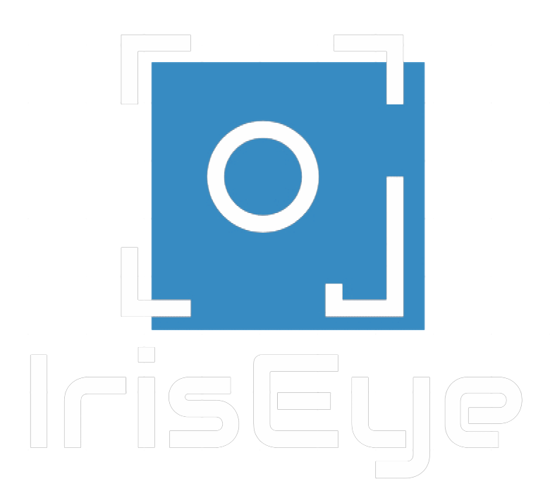

Web para deteccción de colores
Clasificación de colores usando webcam
El color es:
* Recomendaciones para una mejor efectividad en la identificación de colores:
Disponer de luz natural
Favorecer alta luminosidad
Acercar objeto a la cámara